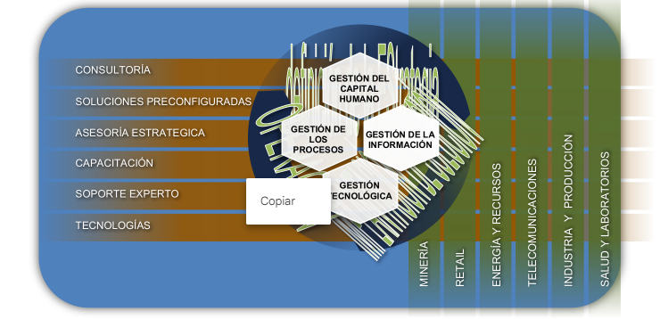

Nuestros Servicios
Nuestro enfoque
Buscamos maximizar el retorno de la inversión SAP, a través de soluciones destinadas al
éxito desde su formulación y alcance.
Nuestra PROPUESTA DE VALOR considera un modelo de SERVICIOS y CAPACIDADES
que incluye el profundo conocimiento y experiencia en aspectos estratégicos,
organizacionales, procesos de negocios, continuidad operativa, evolutiva y tecnológica
para generar soluciones centradas en las necesidades de nuestros clientes .
Modelo de Servicios y Capacidades
Nuestro enfoque permite dar cobertura a un amplio espectro de modalidades de entrega de nuestros servicios y para una gran variedad de tipos de industrias:
Nuestros Principales Proyectos
Facturación Electrónica Ventas - Integración con Coordinador Eléctrico
El proyecto de facturación electrónica e integración con SEN
(Sistema Eléctrico Nacional), tiene los siguientes puntos de mejoras relacionados entre sí.
- Almacenamiento en SAP de los documentos y notificaciones generadas en el facturador electrónico.
(Documentos y notificaciones emitidas y recibidas).
- Detalle de almacenamiento de archivos XML.
- Solución que permite leer y descifrar un Documento tributario electrónico (DTE).
- Detalle de proceso de contabilización en SAP mediante funcionalidad BAPI.
- Contabilización de documentos sin orden de compra y/o HES y cuyo ingreso es realizado por finanzas.
- Solución que permite validar documentos tributarios al momento del ingreso.
- Generar un reporte diario a los distintos centros de costo y responsables de los DTE,s.
- Generar procesos para facturas sin orden de compra pertenecientes a casos denominados excepciones.
- Generar en SAP indicadores para Análisis y gestión, relacionados con el proceso de facturación.
- Generar procesos asociados a instrucciones de pago del coordinador.
- Carga balance de energía
- Reporte balance de energía.
- Generación de pedidos de venta.
- Cuadro de pago
Carga Automática de Facturas de Compras
Solución que permite contabilizar en SAP de forma automática e inmediata DTE´s (Documentos
Tributarios Electrónicos) de acuerdo al cumplimiento de criterios. Esta solución permite:
- Contabilización de documentos con Orden de compra y/o HES y cuyo ingreso es realizado a través de
proceso logístico.
- Contabilización de documentos sin orden de compra y/o HES y cuyo ingreso es realizado a través de
finanzas.
- Generar reportes a los distintos centros de costo y responsables de los DTE,s.
- Generación de pedidos de compra de manera automática en base a criterios definidos.
Flujo de Efectivo
El estado de flujo de efectivo es una herramienta importante para la gestión financiera. Muestra las
cuentas que han contribuido a aumentar o disminuir los recursos de efectivo de la empresa de un
período al siguiente.
El flujo de efectivo, tiene dos representaciones:
- Método Directo
- Método Indirecto
Los flujos de efectivo se clasifican según su origen, en tres actividades mencionadas a continuación:
a. Las actividades operacionales;
b. Las actividades de inversión;
c. Las actividades de financiamiento.
Se considera la obtención desde SAP, dos informes de flujo efectivo, uno por el método directo y otro por
el método indirecto. Ambos de acuerdo a las normas de la superintendencia (SVS).
Para este reporte se plantea una transacción raíz denominada ZFI_FLUJO, que almacenará los
programas para la determinación de reporte de Flujo de efectivo método directo e indirecto, Reporte de
Consolidación y Clasificación.
Análisis de Cuentas
Solución que provee herramientas al Responsable de la Contabilidad, para controlar cronológicamente
el cierre de tareas tanto en finanzas como en otras áreas al interior de la empresa entorno al cierre
mensual contable y el control de los análisis de cuentas.
De esta solución se pueda obtener:
a. Planificación de tareas del cierre mensual y anual.
b. Accesibilidad de planilla de control por los usuarios a diferentes transacciones utilizadas en ciclo
de cierre.
c. Reportes de gestión que permitan obtener los índices de cumplimiento en fecha de cada tarea.
d. Carta Gantt de planificación y cierre tareas.
e. Comunicación vía correo a usuarios y supervisores sobre fechas y cumplimiento de tareas.
Closing Cookpit de SAP, cumple con los puntos anteriores y ademas posee las siguientes ventajas:
a. 100 % estándar SAP
b. No existe costo de mantención
c. Administrable completamente por usuario.
d. Proceso Unificado.
e. Fácil de utilizar
Contabilización automática MT940
El objetivo específico de esta solución es contabilizar en SAP en forma automática los extractos bancarios, en base a un formato único y consolidado de archivo de transferencia (Servicio de consolidación de extractos proveído por Banco Santander)
SAP TAX
Este proyecto permite la determinación de la Renta liquida imponible, determinación de capital propio
tributario, emisión formulario 1879,( Retenciones de honorarios), formulario 1847 (declaración jurada sobre
balance de 8 columnas), formulario 1926 ( Declaración jurada anual sobre base imponible de primera
categoría).
Este reporte permite que sea administrado por usuario., tanto en los datos a presentar para entregar
información y la creación de reportes.
Gestión y Control de Leasing
Esta solución adaptada a SAP es capaz de administrar los diferentes procesos asociados a la
entrega de créditos leasing que genera una institución con terceros.
Características:
La solución que presenta GSP consultores, busca incorporar a SAP los diferentes procesos
involucrados
en la gestión de créditos y los activos fijos relacionados a los mismos.
Propiedades:
Esta herramienta cuenta con los procesos básicos de un crédito de este tipo, como son: Ingreso y
contabilización del crédito, periodificaciones del crédito (Traslado de cuotas del Largo al Corto plazo y
Valoración), Asignaciones de activos y Reportería.